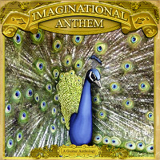

Imaginational Anthem Vol. 1

TRACKLISTING:
- Max Ochs - "Imaginational Anthem (2004)"
- Brad Barr - "Bouba's Bounce"
- Suni McGrath - "Train Z"
- Harris Newman - "Lake Shore Drive (Slight Return)"
- Harry Taussig - "Dorian Sonata"
- Jack Rose - "White Mule III"
- Steve Mann - "My Thoughts Began To Crystallize"
- Glenn Jones - "The Little Dog's Day"
- Gyan Riley & Terry Riley - "La Cigale (The Locust)"
- Bern Nix - "Low Barometer"
- Bob Hadley - "Celtic Reverie"
- Janet Smith & Steve Mann - "Daemon Lover Variations"
- John Fahey - "O'Holy Night"
- Kaki King - "Night After Sidewalk"
- Sandy Bull - "Untitled"
- Max Ochs - "Imaginational Anthem (1969)"
|
Imaginational Anthem brings together pioneering acoustic guitar heroes of the 60's and 70's alongside a new generation
of amazing players. Nearly 70 minutes of archival, live, and newly recorded studio tracks - some by artists who haven't
released any music in decades. Plus a deluxe booklet with producer's notes and never-before-seen photographs.
Imaginational Anthem contains 16 tracks, 13 of which are previously unreleased and 9 which were specifically recorded
for this album.
|

home |
releases |
news |
contact
© 2006 Tompkins Square Records.